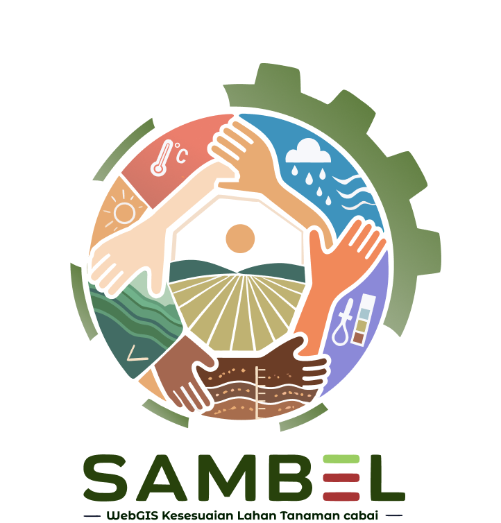

Platform Sistem Informasi Geografis berbasis web untuk analisis kesesuaian lahan budidaya cabai secara spasial menggunakan data multi-parameter di wilayah Kecamatan Lowokwaru, Kota Malang.
Evaluasi kesesuaian lahan berbasis data spasial multi-layer menggunakan metode AHP dan weighted overlay.
Visualisasi peta tematik kesesuaian lahan per kelurahan di Kecamatan Lowokwaru secara real-time.
SAMBEL adalah platform Web GIS yang dikembangkan untuk mendukung analisis dan evaluasi kesesuaian lahan budidaya tanaman cabai (Capsicum annuum L.) secara spasial di Kecamatan Lowokwaru, Kota Malang.
Platform ini mengintegrasikan berbagai data spasial dan atribut lahan untuk menghasilkan peta kesesuaian yang dapat digunakan oleh petani, penyuluh pertanian, dan perencana wilayah dalam mengoptimalkan potensi pertanian cabai di wilayah tersebut.
Kumpulan fitur canggih untuk mendukung analisis kesesuaian lahan cabai secara komprehensif dan berbasis data spasial.
Tampilkan peta digital Kecamatan Lowokwaru dengan layer tematik yang dapat dinyalakan/dimatikan sesuai kebutuhan analisis.
Hitung dan klasifikasikan lahan ke dalam 4 kelas kesesuaian (S1, S2, S3, N) berdasarkan standar evaluasi lahan FAO.
Integrasikan 5 parameter lahan (Temperatur Tanah, Kemiringan Lereng, Kedalaman Solum, Ph tanah, Curah Hujan).
Pantau ringkasan statistik kesesuaian lahan.
Unduh hasil analisis dalam format PDF atau ekspor peta kesesuaian lahan untuk keperluan dokumentasi dan presentasi.
Lakukan pencarian dan filter data spasial berdasarkan parameter tertentu untuk analisis yang lebih mendalam dan terfokus.
Berdasarkan standar evaluasi lahan FAO, lahan diklasifikasikan ke dalam 4 kelas kesesuaian untuk budidaya cabai.
Lahan tidak mempunyai faktor pembatas yang berarti untuk penggunaan secara berkelanjutan.
Lahan mempunyai faktor pembatas yang berpengaruh terhadap produktivitas, memerlukan tambahan masukan.
Lahan mempunyai faktor pembatas berat yang berpengaruh terhadap produktivitas dan memerlukan masukan lebih besar.
Lahan mempunyai faktor pembatas permanen yang tidak dapat diatasi dengan tingkat pengelolaan yang wajar.
Tim multidisiplin yang mengembangkan platform analisis kesesuaian lahan cabai di Kecamatan Lowokwaru.
Ahli Sistem Informasi Geografis dan analisis spasial lahan pertanian.
Pengembang platform berbasis WEB dengan keahlian geospasial dan teknologi pemetaan.
Pengembang platform berbasis WEB dengan keahlian geospasial dan teknologi pemetaan.
Ahli pengolahan data spasial dan visualisasi peta tematik berbasis GIS.
Ahli pengolahan data spasial dan visualisasi peta tematik berbasis GIS.
Tertarik untuk berkolaborasi atau ingin mengetahui lebih lanjut tentang platform SAMBEL? Jangan ragu untuk menghubungi tim kami.
Kecamatan Lowokwaru, Kota Malang, Jawa Timur 65141
kelompok13kemker@gmail.com
087844788187

Menganalisis data spasial...